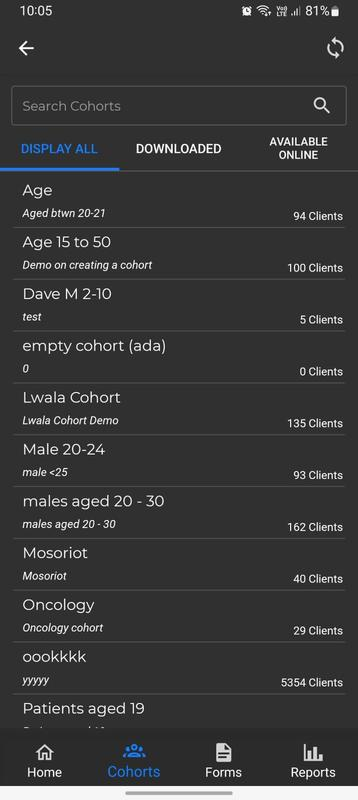
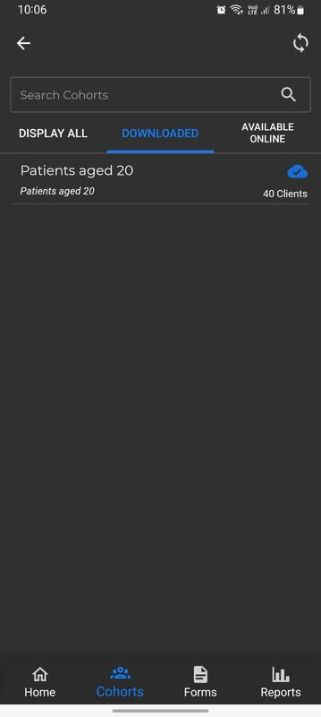
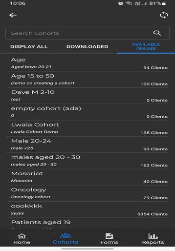
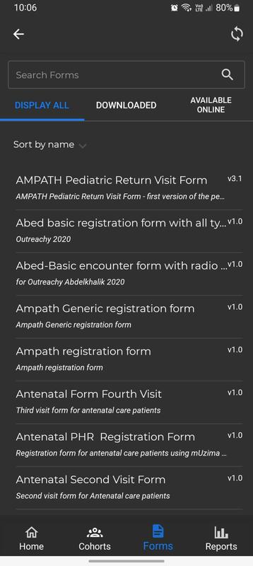
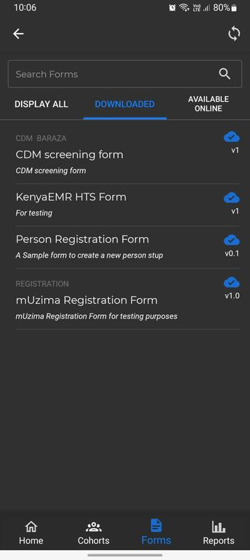
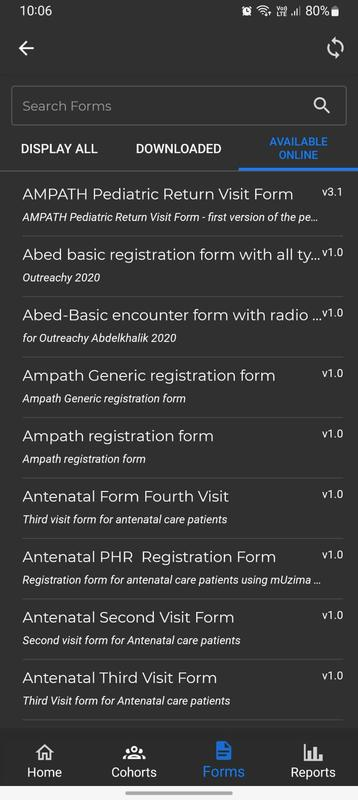

- Huu ndio ukurasa unao onyeshwa pindi mtoa huduma za afya anapoingia kwenye programu ya mUzima.
- Ukurasa huu una mpangilio wa kuonyesha orodha ya wagonywa kulingana na vikundi vya wagonya vilivyo pakuliwa kutoka kwenye seva.
- Mtoa huduma za afya anaweza kuchuja orodha hii kulingana na kikundi au vikundi vya wagonjwa avitakavyo.
- Vile vile, mtoa huduma za afya aneza tafuta mgonjwa kwenye orodha ya vikundi vya wagonjwa akitumia jina lake kwenye eneo la Tafuta Mgonjwa.
- Aidhan, ukurasa huu una kitufe cha kusajili mgonjwa endapo mtoa huduma za afya atahitaji kumsajili mgonjwa.
- Fomu ambazo hazijakamilika zimetengewa eneo katika ukurasa huu ilikumfahamisha mtoa huduma za afya kuwepo fomu hizi.
- Vile vile, fomu ambazo hazijasawazishwa zimetengewa sehemu katika ukurasa huu ilikumfahamisha mtoa huduma za afya kuwepo kwa fomu hizi.
- Kichupo cha ONYESHA ZOTE Kichupo hichi kina orodhesha vikundi vyote vya wagonjwa vilivyo katika kichupo cha IMEPAKULIWA na INAPATIKANA MTANDAONI.
- Kichupo cha IMEPAKULIWA Kichupo hichi kina orodhesha vikundi vya wagonjwa vilivyopakuliwa katika programu ya mUzima.
- AVAILABLE ONLINE tab


Kichupo hichi kina orodhesha vikundi vya wagonjwa vilivyopo kwenye seva. Mtoa huduma wa afya aneza kupakua kikundi akitakacho katika kichupo hichi.

- Kichupo cha ONYESHA ZOTE Kichupo hichi kina orodhesha fomu zilizoko katika kichupo cha IMEPAKULIWA na INAPATIKANA MTANDAONI.
- Kichupo cha IMEPAKULIWA Kichupo hichi kina orodhesha fomu vya zilizopakuliwa katika programu ya mUzima.
- Kichupo cha INAPATIKANA MTANDAONI


Kichupo hichi kina orodhesha fomu zilizoko kwenye seva. Mtoa huduma wa afya aneza kupakua fomu aitakayo kupitia kichupo hichi.

Ukurasa huu una orodhesha ripoti za utendaji wa mhudumu wa afya. Ripoti hizi zinaweza kupakuliwa kutoka kwenye seva ilikuorodhesha katika kifaa cha mhudumu wa afya..